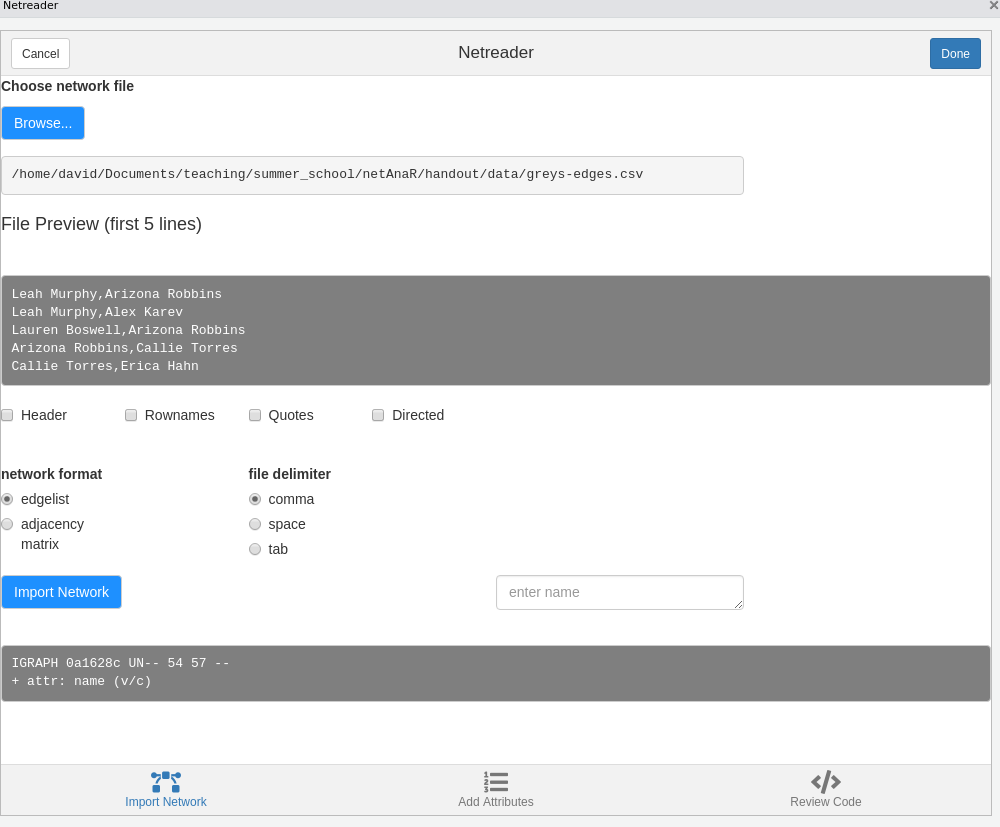
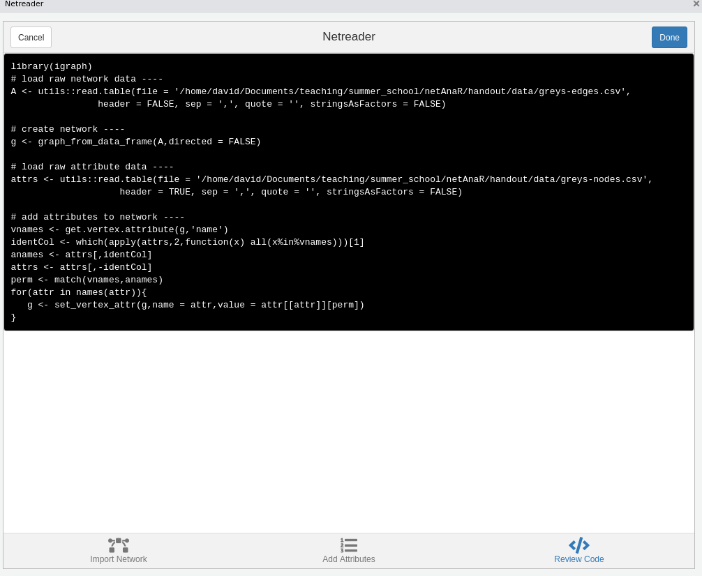

library(igraph)Network Data and Analysis
This chapter introduces the foundational concepts of network analysis and explains how relational data can be represented and analyzed. Moving beyond an individual-centered perspective, we focus on how connections between actors are captured, structured, and studied as networks.
We begin by defining what networks are and how they differ from conventional data structures, before introducing key analytical perspectives such as levels of analysis and the distinction between explaining network outcomes and explaining network formation. Building on this conceptual foundation, the chapter then turns to practical implementation. You will learn how to represent network data in different formats, how to import existing network files, and how to construct and manipulate network objects in R using the igraph package, including working with nodes, edges, and their attributes.
By the end of this chapter, you will understand both how network data is structured and how to work with it in practice.
Packages Needed for this Chapter
Why Study Networks?
Conventional research methods are often individual-based, and our models typically focus on relationships between variables rather than relationships between people. However, much of the world around us is fundamentally structured as networks. This is true not only for society, but also for brains (neural networks), organizations (who reports to whom), economies (who sells to whom), and ecologies (who eats whom). In each of these domains, outcomes are shaped not just by the attributes of individual units, but by the pattern of connections among them.
Classical social theorists emphasized this relational foundation of social life. Georg Simmel argued that society exists where individuals enter into interaction (Simmel 1908). Émile Durkheim described society as a system formed by associated individuals and their channels of communication (Durkheim 1974). Karl Marx similarly stressed that society does not consist of isolated individuals, but expresses the sum of interrelations within which individuals stand (Marx 1993). These perspectives share a central insight: social structure is relational.
Despite this, much empirical research continues to privilege individual-level explanations. For example, if David predominantly eats vegetarian food, we might explain this in terms of his ethical beliefs, economic situation, health concerns, or taste preferences. A network perspective, however, would also consider whether David has a vegetarian partner or close friends who influence his dietary choices. Instead of focusing solely on internal attributes, we examine the relational context in which decisions are embedded.
Network effects also shape emotions and well-being. If someone close to you is unhappy, are you likely to remain unaffected? Feelings, behaviors, and norms often spread through social ties. What happens to one person can influence others in their immediate network and beyond.
Similarly, access to opportunities may depend not only on individual merit but also on personal networks. Jobs, information, and resources are frequently obtained through social connections. Life chances are therefore shaped not just by who we are, but by how we are connected and where we are positioned within a network.
Studying networks allows us to move beyond isolated individuals and to analyze the patterns of relationships that structure behavior, outcomes, and inequality. A network perspective makes these relational structures visible and provides tools to systematically investigate their consequences.
What is a Network?
In the context of social network analysis, a network is a conceptual and analytical construct used to understand, visualize, and examine the relationships and structures that emerge from interactions among individuals, groups, organizations, or even entire societies. Rather than focusing solely on the attributes of actors, a network perspective centers on the ties that connect them and the structures that arise from these connections. This relational perspective lies at the core of social network analysis (Wasserman and Faust 1994; Scott 2012).
At its core, a network consists of nodes and edges. Nodes represent the actors in the network, such as individuals, organizations, or other social entities. Edges represent the relationships or connections between these actors. These relationships can take many forms and capture different aspects of social life.
Connections may be based on similarities, such as shared location, participation in the same event or organization, or common attributes. They may reflect relational roles, such as kinship ties or other socially defined roles. Networks can also capture relational cognition, including affective or perceptual relations (e.g., liking, trust, perceived influence).
Many network ties are based on interactions, such as who talked to whom, who helped whom, or who sold goods to whom. Others represent flows, such as the transmission of information, beliefs, or money. By mapping these different types of relationships, network analysis provides a systematic way to study how social structures are formed and maintained.
Importantly, ties can differ in their properties. Relations may be symmetric, as in mutual friendship, or asymmetric, as in advice-seeking or authority relations (though asymmetric ties can still be reciprocated and thus become bi-directional). Ties may vary in strength, frequency of contact, or intensity, and they can be positive (e.g., friendship, cooperation) or negative (e.g., conflict, dislike).
By conceptualizing social life in terms of nodes and edges and by distinguishing between different types and properties of ties, social network analysis provides a flexible and powerful framework for examining the relational foundations of social structure.
From “Ordinary” to Network Data
Traditional research often treats individuals or entities as independent units of analysis. Even when the focus is on pairs of individuals, such as couples, these dyads are frequently treated as if they were independent from one another. However, in many social settings, relationships are interdependent and overlapping. A person can be part of multiple dyads simultaneously, and these connections influence one another.
As a result, the usual statistical assumption of independence does not hold in networked settings. Observations are not isolated: ties between actors create dependencies. What happens in one relationship may affect others, and individuals are embedded in broader relational structures that shape their behavior and outcomes. Recognizing this interdependence is one of the key motivations for adopting a network perspective.
In the social sciences, networks are tools for mapping and quantifying patterns of social connections. They help reveal the underlying dynamics of social cohesion, influence, and information flow within communities and societies. Rather than focusing solely on individual characteristics, network analysis examines how ties between actors (whether individuals, organizations, or other entities) form structures that shape opportunities and constraints.
Social network analysis is guided by a structural intuition: social life is organized through relationships. It is grounded in systematic empirical data, relying on observed and measured connections between actors. At the same time, it draws heavily on graphical representations, using network diagrams to visualize nodes (actors) and edges (ties) and to make structural patterns such as clusters, central positions, or bridging roles visible.
Beyond visualization, network analysis employs mathematical and computational models to quantify structural properties, test hypotheses about relational processes, and model how networks form and evolve. Through the lens of network theory, researchers can explore how social structures influence behaviors, access to resources, diffusion of information, and life chances. For this reason, social network analysis has become an invaluable approach in sociology, anthropology, political science, and many other disciplines concerned with social systems and interactions.
Levels of Analysis
A key feature of network analysis is that it can be conducted at multiple levels, each capturing different aspects of social structure. Distinguishing between these levels helps clarify both the type of data collected and the kinds of research questions that can be addressed.
At the most basic level is the dyadic level, which focuses on pairs of actors and the relationships between them. The dyad is the fundamental unit of network data collection, as ties are always defined between two nodes. Research at this level examines how relationships form and what consequences they have. For example, one might ask whether sharing an office increases the likelihood of friendship, or whether similarity in attributes leads to tie formation.
Moving up, the node level considers individual actors embedded within a network. Here, dyadic information is aggregated to describe properties of nodes, such as the number of connections an individual has, their centrality, or their position within the network. Node-level analysis typically relates network properties to individual outcomes. For instance, researchers may examine whether individuals with more social ties enjoy better health, higher performance, or greater access to resources.
At a broader scale, the network level examines the overall structure of the network as a whole. This includes properties such as density, clustering, centralization, or the presence of cohesive subgroups. Network-level questions address how structural configurations shape collective outcomes. For example, one might ask whether more densely connected networks facilitate faster diffusion of information or innovation.
Additional intermediate levels are also possible, such as triads or larger groups, which allow researchers to study patterns like transitivity, balance, and subgroup cohesion. Together, these levels highlight that networks are inherently multi-layered structures, and meaningful analysis often requires moving between them.
Goals of Network Analysis
Network analysis can be used for different analytical purposes depending on how network variables are conceptualized within a study. A central distinction is whether network properties are treated as independent (explanatory) variables or as dependent (outcome) variables.
In the first case, researchers use network measures to explain individual or collective outcomes. This approach draws on network theory, which emphasizes how structural positions and relational patterns shape behavior and opportunities. For example, an individual’s centrality in a network may influence their performance, access to information, or accumulation of social capital. Likewise, brokerage positions that connect otherwise disconnected groups may facilitate innovation, information advantages, or control over resources. In this perspective, network properties serve as explanatory variables that help account for observed outcomes.
In the second case, network structures themselves become the outcome of interest. Here, the goal is to understand how and why networks form and evolve. This approach is often described as the theory of networks. Researchers investigate the mechanisms that generate observed patterns of ties, such as homophily, reciprocity, or balance processes. For instance, one might examine whether people with similar attributes, interests, or behaviors are more likely to become friends. In this perspective, network ties and structures are dependent variables to be explained.
These two analytical orientations are complementary. On the one hand, network theory explains the consequences of network structure. On the other hand, the theory of networks explains the antecedents of network structure. Together, they provide a broader framework for understanding both how networks shape social outcomes and how they themselves are shaped by social processes.
Network Representations
There are several possible ways to express network data. All come with a set of advantages and disadvantages.
Adjacency Matrix
An adjacency matrix is a square matrix where the elements indicate whether pairs of vertices in the graph are adjacent or not, meaning whether they are directly connected by an edge. If the graph has \(n\) vertices, the matrix \(A\) will be an \(n \times n\) matrix where the entry \(A_{ij}\) is \(1\) if there is an edge from vertex \(i\) to vertex \(j\), and \(0\) if there is no edge. In the case of weighted graphs, the weight of the edge is used instead of binary values.
For undirected graphs, the adjacency matrix is symmetric, meaning that \(A_{ij} = A_{ji}\) for all pairs of vertices. This reflects the fact that ties have no direction: if vertex \(i\) is connected to vertex \(j\), then vertex \(j\) is also connected to vertex \(i\). In contrast, for directed graphs the matrix is generally not symmetric, because a tie from \(i\) to \(j\) does not necessarily imply a tie from \(j\) to \(i\) (e.g., in advice-seeking or following relationships).
Pros
Simple Representation: It provides a straightforward and compact way to represent graphs, especially useful for dense graphs where many or most pairs of vertices are connected.
Efficient for Edge Lookups: Checking whether an edge exists between two vertices can be done in constant time, making it efficient for operations that require frequent edge lookups.
Easy Implementation of Algorithms: Many graph algorithms can be easily implemented using adjacency matrices, making it a preferred choice for certain computational tasks.
Cons
Space Inefficiency: For sparse graphs, where the number of edges is much less than the square of the number of vertices, an adjacency matrix uses a lot of memory to represent a relatively small number of edges.
Poor Scalability: As the number of vertices grows, the size of the matrix grows quadratically, which can quickly become impractical for large graphs.
Edge List
An edge list is a matrix (or data frame) where each row represents an edge between two vertices. In an undirected graph, an edge is given by a pair \((i,j)\), indicating a connection between vertices \(i\) and \(j\). Because the relation has no direction, the pairs \((i,j)\) and \((j,i)\) represent the same edge. For directed graphs, the order of the vertices in each pair matters: an entry \((i,j)\) indicates a tie from vertex \(i\) to vertex \(j\).
In weighted graphs, an additional column can be included to represent the strength, frequency, or intensity of the tie. More generally, edge lists can be extended with further columns to store edge attributes, such as timestamps, types of interaction, or categories of relationships.
Pros
Space Efficiency for Sparse Graphs: Edge lists are particularly space-efficient for representing sparse graphs where the number of edges is much lower than the square of the number of vertices, as they only store the existing edges.
Simplicity: The structure is straightforward and easy to understand, making it suitable for simple graph operations and for initial graph representation before processing.
Cons
Inefficient for Edge Lookups: Checking whether an edge exists between two specific vertices can be time-consuming, as it may require scanning through the entire list, leading to an operation that is linear in the number of edges.
Inefficiency in Graph Operations: Operations like finding all vertices adjacent to a given vertex or checking for connectivity between vertices can be inefficient compared to other representations like adjacency matrices or adjacency lists, especially for dense graphs.
Less Suitable for Dense Graphs: As the number of edges grows, the edge list can become large and less efficient in terms of both space and operation time compared to an adjacency matrix for dense graphs, where the number of edges is close to the maximum possible number of edges.
Adjacency List
An adjacency list is a collection of lists, where each list corresponds to a vertex and contains the set of vertices adjacent to it. In other words, for every vertex \(i\) in the graph, there is an associated list that includes all vertices \(j\) to which \(i\) is directly connected.
For undirected graphs, if vertex \(i\) is connected to vertex \(j\), then \(j\) will appear in the list of \(i\) and \(i\) will also appear in the list of \(j\). In directed graphs, however, adjacency lists typically distinguish between outgoing and incoming ties, so the list for vertex \(i\) usually contains only those vertices that \(i\) points to.
Pros
Space Efficiency: Adjacency lists are more space-efficient than adjacency matrices in sparse graphs, as they only store information about the actual connections.
Scalability: This representation scales better with the number of edges, especially for graphs where the number of edges is far less than the square of the number of vertices.
Efficiency in Graph Traversal: For operations like graph traversal or finding all neighbors of a vertex, adjacency lists provide more efficient operations compared to adjacency matrices, particularly in sparse graphs.
Cons
Edge Lookups: Checking whether an edge exists between two specific vertices can be less efficient than with an adjacency matrix, as it may require traversing a list of neighbors.
Variable Edge Access Time: The time to access a specific edge or to check for its existence can vary depending on the degree of the vertices involved, leading to potentially inefficient operations in certain scenarios.
Higher Complexity for Dense Graphs: In very dense graphs, where the number of edges approaches the number of vertex pairs, adjacency lists can become less efficient in terms of space and time compared to adjacency matrices, due to the overhead of storing a list for each vertex.
Importing Network Data
Foreign Formats
igraph can deal with many different foreign network formats with the function read_graph. (The rgexf package can be used to import Gephi files.)
read_graph(
file,
format = c(
"edgelist",
"pajek",
"ncol",
"lgl",
"graphml",
"dimacs",
"graphdb",
"gml",
"dl"
),
...
)If your network data is in one of the above formats you will find it easy to import your network.
Nodes, Edges, and Attributes
If your data is not in a network file format, you will need one of the following functions to turn raw network data into an igraph object: graph_from_edgelist(), graph_from_adjacency_matrix(), graph_from_adj_list(), or graph_from_data_frame().
Before using these functions, however, you still need to get the raw data into R. The concrete procedure depends on the file format. If your data is stored as an excel spreadsheet, you need additional packages. If you are familiar with the tidyverse, you can use the readxl package. Other options are, e.g. the xlsx package.
Most network data you’ll find is in a plain text format (csv or tsv), either as an edgelist or adjacency matrix. To read in such data, you can use base R’s read.table().
Make sure you check the following before trying to load a file: Does it contain a header (e.g. row/column names of an adjacency matrix)? How are values delimited (comma, whitespace or tab)? This is important to set the parameters header, sep to read the data properly.
Networks in igraph
Below, we represent friendship relations between Bob, Ann, and Steve as a matrix and an edgelist.
# adjacency matrix
A <- matrix(
c(0, 1, 1, 1, 0, 1, 1, 1, 0),
nrow = 3,
ncol = 3,
byrow = TRUE
)
rownames(A) <- colnames(A) <- c("Bob", "Ann", "Steve")
A Bob Ann Steve
Bob 0 1 1
Ann 1 0 1
Steve 1 1 0# edgelist
el <- matrix(
c("Bob", "Ann", "Bob", "Steve", "Ann", "Steve"),
nrow = 3,
ncol = 2,
byrow = TRUE
)
el [,1] [,2]
[1,] "Bob" "Ann"
[2,] "Bob" "Steve"
[3,] "Ann" "Steve"Once we have defined an edgelist or an adjacency matrix, we can turn them into igraph objects as follows.
g1 <- graph_from_adjacency_matrix(A, mode = "undirected", diag = FALSE)
g2 <- graph_from_edgelist(el, directed = FALSE)
# g1 and g2 are the same graph so only printing g1
g1IGRAPH 320657a UN-- 3 3 --
+ attr: name (v/c)
+ edges from 320657a (vertex names):
[1] Bob--Ann Bob--Steve Ann--SteveThe printed summary shows some general descriptives of the graph. The string “UN–” in the first line indicates that the network is Undirected (D for directed graphs) and has a Name attribute (we named the nodes Bob, Ann, and Steve). The third and forth character are W, if there is a edge weight attribute, and B if the network is bipartite (there exists a node attribute “type”). The following number indicate the number of nodes and edges. The second line lists all graph, node and edge variables. Here, we only have a node attribute “name”.
The conversion from edgelist/adjacency matrix into an igraph object is quite straightforward. The only difficulty is setting the parameters correctly (Is the network directed or not?), especially for edgelists where it may not immediately be obvious if the network is directed or not.
Import via snahelper
The R package snahelper implements several Addins for RStudio that facilitate working with network data by providing a GUI for various tasks. One of these is the Netreader which allows to import network data.
The first two tabs allow you to import raw data (edges and attributes). Make sure to specify file delimiters, etc. according to the shown preview.

Using the Netreader should comes with a learning effect (hopefully). The last tab shows the R code to produce the network with the chosen data without using the Addin.

The network will be saved in your global environment once you click “Done”.
References
Durkheim, Emile. 1974. “Individual and Collective Representations.” Sociology and Philosophy, 1–34.
Marx, Karl. 1993. Grundrisse: Foundations of the Critique of Political Economy. Penguin UK.
Simmel, Georg. 1908. “1971.“the Problem of Sociology.” On Individuality and Social Forms.